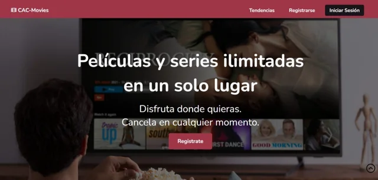

Noviembre 2024 — Agosto 2026 · 1 año y 9 meses
Soporte técnico
Empresa del sector fintechSQL, MySQL, Postman y APIs. Reportes y macros en Excel, automatizaciones con IA, QA y coordinación de nuevos proyectos.
Sistemas · Datos · Automatización
Desarrolladora SQL.
Datos y automatización.
Trabajo con SQL en Microsoft SQL Server Management Studio y gestiono tickets en Jira. También desarrollo sitios web y automatizo tareas con Python, n8n y Make.
Mi perfil profesional
Soy estudiante avanzada de Analista de Sistemas en ORT. Mi experiencia combina trabajo con datos, pruebas de software y automatización de tareas.
Ver mi recorrido completoNoviembre 2024 — Agosto 2026 · 1 año y 9 meses
SQL, MySQL, Postman y APIs. Reportes y macros en Excel, automatizaciones con IA, QA y coordinación de nuevos proyectos.
01 / Proyectos seleccionados
Estos proyectos fueron diseñados y desarrollados íntegramente por mí.

01 / Marca y presencia digital
Un espacio para presentar servicios de contenido, redes sociales y diseño web.

02 / Proyecto académico
Un catálogo de películas como práctica de desarrollo web en Codo a Codo.

03 / Web informativa
Contenido educativo sobre kéfir, organizado en una experiencia de lectura simple.
02 / Habilidades
Consultas SQL, comparación de registros y reportes para detectar diferencias entre operaciones.
SQL · SQL Server / SSMS · MySQL · Excel
En mi puesto anterior utilicé SQL, MySQL y Excel para revisar datos y preparar reportes.
Ver experienciaPruebas de APIs, lectura de logs y validación de transacciones para seguir el recorrido de un problema.
Postman · REST APIs · JSON · Jira
En mi puesto anterior probé APIs con Postman y realicé tareas de QA para comprobar el funcionamiento de las integraciones.
Ver tareas del puesto anteriorFlujos de automatización e IA aplicada para reducir pasos repetitivos y ordenar información.
n8n · Make · Python · VBA
En mi puesto anterior preparé reportes, macros y automatizaciones en Excel y trabajé con automatizaciones de IA. Mi formación también incluye n8n y Make.
Ver formación en automatizaciónDesarrollo de sitios web y aplicaciones backend. Pruebas funcionales para comprobar que respondan a lo esperado.
JavaScript · Node.js · MongoDB · QA
En los proyectos puedes consultar los sitios publicados, mi aporte y los repositorios de código.
Explorar proyectos03 / Servicios con MAR Studio
MAR Studio es mi proyecto de servicios digitales. Diseño y desarrollo sitios web, preparo automatizaciones e integro herramientas de IA según las necesidades de cada proyecto.
Diseño y desarrollo de páginas adaptadas a móvil, tableta y escritorio.
Flujos para conectar herramientas, organizar datos y preparar reportes.
Asistentes y flujos con IA para tareas definidas dentro de un proceso.
04 / Formación continua
Contacto
Puedes escribirme por una oportunidad laboral o para consultar sobre desarrollo web y automatización.
Enviar un correo